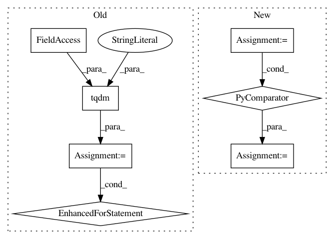

0e0b2faa1a205fe276a7c53bc600fca60b239234,tools/sort.py,Sort,sort_face_yaw,#Sort#,239
Before Change
input_dir = self.args.input_dir
img_list = []
for img in tqdm(self.find_images(input_dir),
desc="Loading",
file=sys.stdout):
landmarks = self.get_landmarks(img)
img_list.append(
[img, self.calc_landmarks_face_yaw(np.array(landmarks))])
logger.info("Sorting by face-yaw...")
img_list = sorted(img_list, key=operator.itemgetter(1), reverse=True)
return img_list
After Change
filename_list, image_list, landmarks = self._get_landmarks()
logger.info("Estimating yaw...")
yaws = [self.calc_landmarks_face_yaw(mark) for mark in landmarks]
logger.info("Sorting...")
matched_list = list(zip(filename_list, yaws))
img_list = sorted(matched_list, key=operator.itemgetter(1), reverse=True)
In pattern: SUPERPATTERN
Frequency: 3
Non-data size: 7
Instances
Project Name: deepfakes/faceswap
Commit Name: 0e0b2faa1a205fe276a7c53bc600fca60b239234
Time: 2019-10-28
Author: vrooman.kyle@gmail.com
File Name: tools/sort.py
Class Name: Sort
Method Name: sort_face_yaw
Project Name: deepfakes/faceswap
Commit Name: 0e0b2faa1a205fe276a7c53bc600fca60b239234
Time: 2019-10-28
Author: vrooman.kyle@gmail.com
File Name: tools/sort.py
Class Name: Sort
Method Name: sort_face_cnn_dissim
Project Name: deepfakes/faceswap
Commit Name: a8e8f9157b38314bb12910fe13fa7f34739d9c2b
Time: 2019-04-12
Author: 36920800+torzdf@users.noreply.github.com
File Name: tools/lib_alignments/jobs.py
Class Name: Merge
Method Name: process